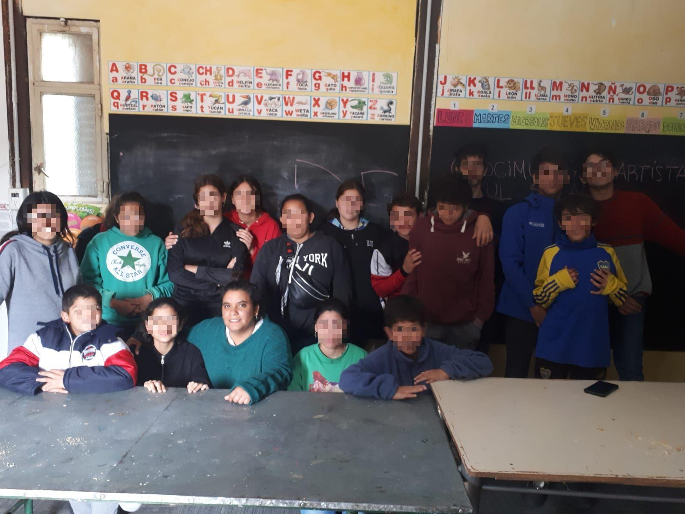

Diciembre 2023
Finales y comienzos

Almuerzo de fin de año. En la foto: al fondo de izquierda a derecha: Jonny, Lola, Valentina, Enzo. En el centro: Abril.
Con un asado en el camping municipal, a la vera del río San Marcos, cerramos el programa 2023 para los adolescentes de la Fundación Sierra Dorada. Fueron 7 meses increíbles en los que pudimos compartir, y sobre todo aprender, con 15 jóvenes que se encuentran actualmente en situaciones difíciles, pero con el mismo deseo: salir adelante y volver a ser aceptados.
Cuando en mayo les contamos que queríamos llevarles un programa para compartirles nuestra experiencia de vida, apoyarlos en la gestión de las emociones y brindarles talleres y cursos para que pudieran descubrir su propósito de vida, recibimos una respuesta que no esperábamos: desconfianza. Esa herida de rechazo y abandono aún estaba fresca y se manifestaba en la imposibilidad de confiar en los mayores. Ante esta situación, quisimos demostrarles que, a pesar de toda la oscuridad a su alrededor, siempre hay alguien dispuesto a llevar luz.
Todos los sábados del año nos juntamos por la mañana para compartir nuestras experiencias de vida y enseñarles sobre distintos temas. Para nuestra sorpresa, los chicos se prendieron y siempre estaban esperándonos, con mate en mano, en la puerta de la biblioteca para los encuentros. Juntos pudimos disfrutar de películas motivacionales, talleres sobre la gestión de las emociones, organización del tiempo, definición de objetivos, oportunidades laborales, armado de CV y administración financiera, entre otros.
Otras veces, salimos a conectarnos con la naturaleza, pasar un tiempo en silencio y descubrir que todas las dificultades que parecen estar en el mundo exterior en realidad se encuentran en la mente y son pensamientos cargados de emociones.
En los días de la semana, y según los gustos particulares de cada uno, tuvieron la oportunidad de participar de distintos cursos: peluquería, manicura, masajes, inglés, marketing digital, edición gráfica, dibujo y ajedrez fueron los elegidos. Algunos descubrieron talentos ocultos y obtuvieron nuevas herramientas, otros pudieron descubrir lo que no era para ellos.
De los 15 adolescentes que empezaron el año, uno pudo darse una segunda oportunidad con sus padres biológicos, otros fueron acogidos por nuevas familias, y algunos, cerca de cumplir la mayoría de edad, pudieron conseguir su primer trabajo y darse cuenta de que sus miedos eran solo ilusiones que pierden fuerzas al ser enfrentados. Otros seguirán en el hogar trabajando en recuperar la confianza perdida y esperando su oportunidad, que aunque tarde, llegará con seguridad en el momento oportuno.
Cerramos este año agradeciendo a todos los que colaboraron con el programa y a los chicos por enseñarnos más de lo que nosotros les enseñamos a ellos. Termina un 2023 con la inevitable incertidumbre de lo que nos depara el año que viene, pero con la certeza absoluta de que todo será como tiene que ser. Así lo creemos.
¡Gracias a todos y feliz año!
